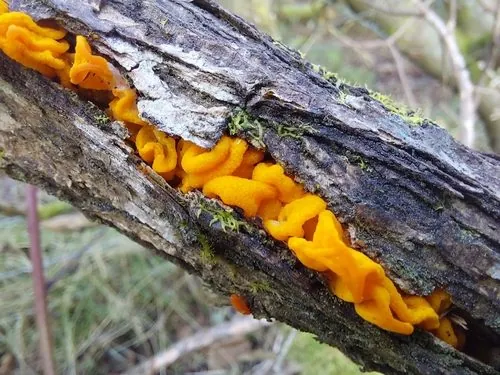

真菌 · 真菌界
橙黄银耳 Tremella mesenterica

银耳科胶质菌，子实体橙黄至金黄色、皱褶如脑，生于阔叶树枯枝，可食但口感清淡，几乎没有风味。
- 分类
- 门担子菌门纲伞菌纲目银耳目科银耳科属银耳属
- 栖息环境
- 阔叶树枯枝与倒木上，常寄生于其他木腐菌
- 地理分布
- 北半球温带至亚热带广布，中国南北各地及欧洲、北美常见
- 保护级别
- 暂无评估；种群稳定
物种志
橙黄银耳的子实体胶质，直径 2–8 厘米，由多个皱褶的瓣片组成，形似脑或肠，表面橙黄、金黄至淡橙色，湿润时半透明、有黏性，干燥后收缩成黄褐色硬膜。菌肉胶质，无味。子实层分布于瓣片表面，担子纵隔。孢子印白色，孢子近球形。
橙黄银耳生于阔叶树的枯枝、倒木上，常寄生于韧革菌等木腐菌的子实体或菌丝上，全年雨后均可发生，以秋冬较多。它可食，但胶质无味，多作汤羹或甜品配料，口感不如栽培的银耳（白木耳）细糯。采食时需注意与颜色相近的胶质菌区分，并避免采食已发酵变味的个体。其胶质在烹饪中主要提供口感而非风味。其干燥子实体入药，民间用于润肺止咳。
形态与习性
- 子实体胶质，直径 2–8 厘米，皱褶如脑
- 颜色橙黄至金黄，湿润半透明，干后黄褐
- 孢子印白色，孢子近球形
- 生境阔叶树枯枝，寄生于其他木腐菌
- 食用性可食，胶质无味，多作汤羹配料
- 药用民间用于润肺止咳
趣味知识
- 橙黄银耳看起来像一小团橙色的脑子，湿润时半透明、捏起来滑腻。
- 它其实寄生在其他木腐菌身上，靠分解对方的菌丝获取营养。
- 干燥后它会缩成一层黄褐色硬膜，遇雨又能重新吸水膨大。
- 它可食但味道寡淡，远不如栽培银耳细糯，多用于配色或做汤。